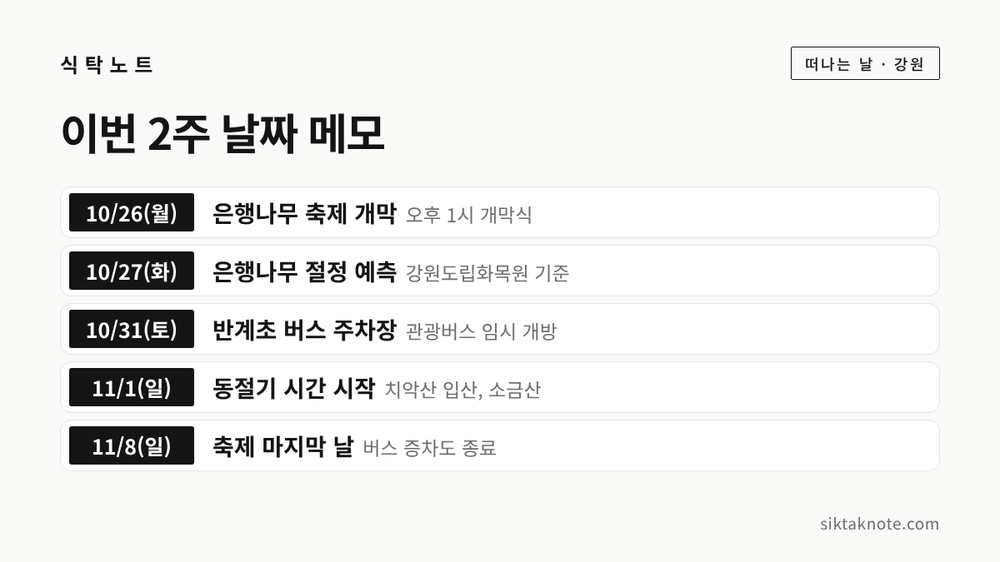
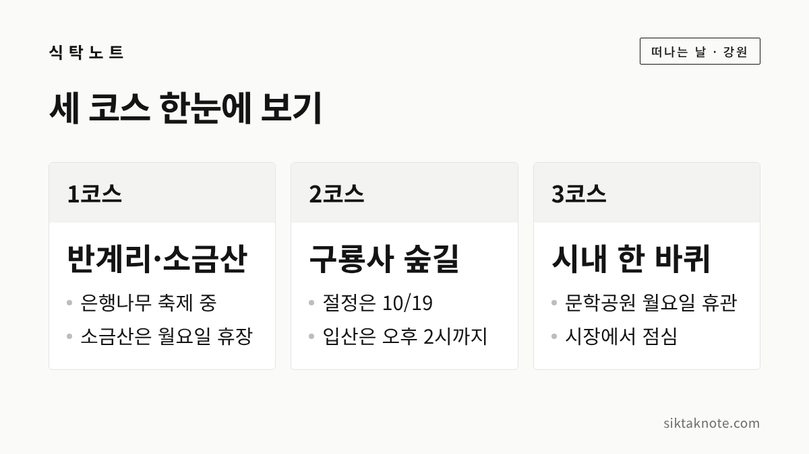

원주 가을 나들이 3코스 — 반계리 은행나무, 치악산 구룡사, 시내 한 바퀴

3줄 요약
- 반계리 은행나무 축제가 10월 26일부터 11월 8일까지 열리는데요. 가까운 소금산 그랜드밸리와 묶어 하루 코스로 짜 볼 수 있습니다.
- 치악산은 기상청 관측으로 10월 19일에 절정이 지났어요. 구룡사에서 세렴폭포까지는 걷기 쉬운 숲길로 소개되지만, 입산 가능 시간이 정해져 있다는 점은 챙기셔야 합니다.
- 박경리문학공원과 소금산 그랜드밸리는 월요일에 쉬어요. 오늘처럼 월요일에 움직이신다면 코스부터 고르시는 게 좋겠습니다.
행사 정보
- 반계리 은행나무 축제
- 2026년 10월 26일(월) ~ 11월 8일(일), 14일간. 문막읍 반계리 은행나무광장 일원 (원주시 발표를 전한 보도)
- 소금산 그랜드밸리
- 원주시 지정면 지정로 317. 매주 월요일 휴장, 4~10월 9시~18시(매표 16시 30분까지), 11~3월 9시~17시 (보도). 트레킹 코스 대인 10,000원, 케이블카 코스 18,000원 (2025년 2월 26일 적용, 원주시)
- 치악산 구룡사~세렴폭포
- 구룡탐방지원센터 출발. 센터~구룡사 1.1km, 구룡사~세렴폭포 2.2km (원주시 안내). 입산 가능 시간 4~10월 4시~14시, 11~3월 5시~13시 (여행 정보). 문의 033-740-9900
- 박경리문학공원
- 원주시 토지길 1(단구동). 10시~17시, 12시~13시 관람 불가. 매주 월요일, 1월 1일, 설·추석 연휴 휴관. 관람·해설 무료 (원주시)
- 강원감영·중앙시장
- 강원감영 9시~22시, 연중무휴, 무료 (한국관광공사 정보를 옮긴 글). 중앙시장은 점포마다 영업시간과 휴무가 달라요
- 올해 단풍
- 치악산 첫 단풍 10월 6일, 절정 10월 19일 (기상청 관측을 전한 10월 22일 보도). 반계리 은행나무의 오늘 상태는 확인하지 못했어요
2026.10.26 확인 기준. 소금산 야간 프로그램 시간, 반계리 축제 운영 시간, 구룡사 일대의 실제 단풍 상태는 확인하지 못했어요. 출발 전에 원주시 관광 누리집과 국립공원공단 공지를 한 번 더 보세요.
가기 전에 알아둘 것
올가을 원주에서 어디를 갈지 고민하는 분이 많으실 텐데요. 세 코스로 나눠 봤어요. 반계리 은행나무와 소금산 그랜드밸리, 치악산 구룡사와 세렴폭포, 그리고 시내의 박경리문학공원과 중앙시장입니다. 확인하지 못한 것은 못 했다고 적었어요.
먼저 10월 26일 기준 단풍입니다. 이투데이가 10월 22일 기상청 관측을 전한 보도에 따르면 치악산은 10월 6일에 첫 단풍, 10월 19일에 절정이 관측됐습니다. 다만 절정 관측일이 오늘의 풍경을 보장하지는 않는데요. 같은 보도에서 오대산은 절정 관측 일주일 뒤 낙엽이 많이 진 구간이 보였다고 하니, 치악산도 높은 곳은 잎이 졌을 수 있어요.
은행나무는 산보다 조금 늦습니다. 10월 8일 한국관광공사와 산림청 국립수목원이 낸 '2026 단풍지도'는 수도권과 강원권의 절정을 10월 말로 봤고, 위키트리 보도로는 은행나무 절정이 강원도립화목원 10월 27일, 국립수목원 10월 31일입니다. 반계리 나무의 오늘 상태는 보도로 확인하지 못했어요. 원주시가 시청 누리집에 실시간 영상을 공개하고 있으니 출발 전에 보시면 좋겠습니다. 전국 전망은 2026 단풍 절정 시기 글에 있어요.


코스 고르는 법
- 지금 제철인 곳은 1코스입니다. 축제가 11월 8일까지 이어지는데요. 주말에는 붐빌 테니 평일이 편하실 거예요.
- 걷는 시간이 좋다면 2코스입니다. 산은 절정이 지났으니 단풍보다 낙엽 깔린 숲길이라 생각하고 가시는 게 좋겠습니다.
- 어르신이나 아이와 천천히 다닌다면 3코스가 무난합니다. 월요일에는 문학공원이 쉬니 감영과 시장만 보시면 됩니다.


코스 1. 반계리 은행나무에서 소금산까지

반계리 은행나무는 천연기념물 제167호이고 나이는 약 1,300년으로 추정됩니다. 나무 이야기는 반계리 은행나무 2026 글에 적었는데요. 그때 확인하지 못했던 축제 소식이 이제 나왔습니다. 원주시 발표를 전한 보도에 따르면 축제는 10월 26일부터 11월 8일까지 14일간 은행나무광장 일원에서 열려요. 개막식은 26일 오후 1시이고, 시립교향악단 공연과 매지농악, 버스킹, 먹거리 부스, 벼룩시장이 있다고 합니다. 강원도민일보는 무대 공연이 10월 26일, 30일, 31일, 11월 1일, 6일, 8일에 편성됐다고 전했습니다.
소금산 그랜드밸리는 지정면 지정로 317에 있습니다. 출렁다리와 울렁다리(404m), 소금잔도, 스카이타워가 이어지고 케이블카도 있어요. 요금은 트레킹 코스 대인 10,000원, 케이블카 코스 18,000원입니다(2025년 2월 26일부터, 원주시). 전체를 걸으면 약 2시간이라는 소개가 있고, 케이블카 대기까지 넣어 반나절을 잡으라는 보도도 있습니다.
두 곳 사이 이동 시간은 공식 자료에서 찾지 못했어요. 제안을 드리자면 은행나무를 오전에 보고 점심 뒤 소금산으로 가는 순서예요. 소금산은 매표가 오후 4시 30분에 끝나고 월요일에 쉬어요.

코스 2. 치악산 구룡사에서 세렴폭포까지
출발점은 구룡탐방지원센터입니다. 원주시 안내에는 센터에서 구룡사까지 1.1km, 구룡사에서 세렴폭포까지 2.2km로 나와 있는데요. 여행 소개 글에는 '총 3km, 1시간 30분'이라는 곳도 있어서 자료마다 기준이 다른 듯합니다. 걸음이 느리시면 넉넉히 잡으세요. 완만한 흙길과 데크라서 가족 산책으로 소개되고, 구룡소까지는 무장애 탐방로라고 합니다.
구룡사는 668년에 의상대사가 세웠다고 전해지는 절이에요. 아홉 마리 용이 살던 연못을 메우고 지었다는 이야기가 있습니다. 한 여행 매체는 2022년 문화재 관람료가 없어져 경내 입장이 무료라고 전했고요. 절 입구에는 황장목 벌채를 금하던 황장금표(강원도 기념물 제30호)가 있습니다. 전설은 치악산 꿩의 보은 전설에서 읽어 보세요.
꼭 챙기실 것은 입산 시간입니다. 여행 정보에는 세렴폭포까지 입산 가능 시간이 4~10월 오전 4시~오후 2시, 11~3월 오전 5시~오후 1시로 안내돼 있어요. 11월 1일부터 겨울 시간이 된다는 뜻입니다. 확인은 치악산국립공원사무소(033-740-9900)에 하세요. 구룡사 일대의 실제 단풍 상태는 확인하지 못했어요. 점심은 가을 산행 도시락 글을 참고하시면 됩니다.

코스 3. 시내 한 바퀴, 박경리문학공원에서 중앙시장까지
박경리문학공원은 단구동 토지길 1에 있고 관람과 해설이 무료입니다. 오전 10시부터 오후 5시까지인데, 낮 12시~1시에는 관람할 수 없어요. 연보에 따르면 박경리 선생은 1980년 단구동에 정착했고 1994년 8월 15일 「토지」를 탈고했습니다. 공원에는 옛집과 문학의 집, 평사리마당, 용두레벌, 홍이동산이 있어요.
강원감영은 1395년에 설치돼 1895년까지 약 500년간 강원도 행정의 중심이었던 곳입니다. 한국관광공사 정보를 옮긴 글에는 오전 9시~밤 10시, 연중무휴, 무료로 나와 있어요. 직접 확인하지는 못했어요.
중앙시장은 영업시간과 휴무가 점포마다 다릅니다. 서울신문 보도에 따르면 원주 만두는 한국전쟁 직후 피란민과 상인이 미군 원조 밀가루로 빚어 팔면서 시작됐다고 해요. 더 궁금하시면 원주 만두축제 2026 가이드를 보세요.
제안하는 순서는 문학공원에서 오전을 보내고, 시장에서 점심을 먹은 뒤, 오후에 강원감영을 걷는 길입니다. 공식 일정이 아니고 장소 사이 이동 시간은 확인하지 못했으니 지도 앱으로 보세요.

주차와 대중교통
- 반계리: 내비게이션에 '반계리은행나무 주차장(문막읍 반계리 1092-1)'을 입력하라는 안내가 있고 무료예요. 은행나무광장 주변에 약 340면의 임시주차장이 11월 20일까지 열립니다. 주말 관광버스는 반계초등학교 운동장(10월 31일, 11월 1일·7일·8일)을 씁니다.
- 반계리 버스: 10월 17일~11월 8일 주말·공휴일에 공영버스가 하루 8회 늘어요. 보도마다 번호가 1번과 1-1번으로 달라서 타기 전에 확인하세요.
- 소금산: 내비게이션에 '소금산 그랜드밸리 통합센터'를 입력하면 됩니다.
- 구룡사: 한 여행 매체에 따르면 주차장은 2024년 5월부터 유료(12시간 5,000원)이고 맑은 날 만차가 잦다고 합니다. 오래된 정보일 수 있습니다. 시내버스는 원주시 자료에 평일 환승 뒤 41-1번, 휴일 41-2번으로 약 1시간이라고 나오는데 노선이 바뀌었을 수 있어요.
- 시내: 세 곳 모두 주차가 가능하다고 소개되지만 면 수는 확인하지 못했어요.
쉬는 날 먼저 보세요
| 장소 | 쉬는 날 | 운영 시간 |
|---|---|---|
| 소금산 그랜드밸리 | 매주 월요일 (공휴일이면 다음 날) | 4~10월 9~18시, 11~3월 9~17시 |
| 박경리문학공원 | 매주 월요일, 1월 1일, 설·추석 연휴 | 10~17시 (12~13시 관람 불가) |
| 강원감영 | 연중무휴로 소개 | 9~22시로 소개 |
소금산 야간 프로그램은 시작 시각이 보도마다 달라서 적지 않았어요.
떠나기 전에 확인할 곳
세 코스 모두 출발 전에 볼 것은 같습니다. 단풍 상태와 쉬는 날, 그리고 주차예요. 반계리는 원주시 누리집의 실시간 영상, 치악산은 국립공원공단과 기상청 단풍 현황, 소금산과 문학공원은 원주시 관광 누리집이 가장 믿을 만합니다.
은행 열매를 사 오셨다면 은행 손질과 보관법도 함께 보세요. 이 글은 2026년 10월 26일 기준이며, 새 소식이 확인되는 대로 고쳐 쓰겠습니다.